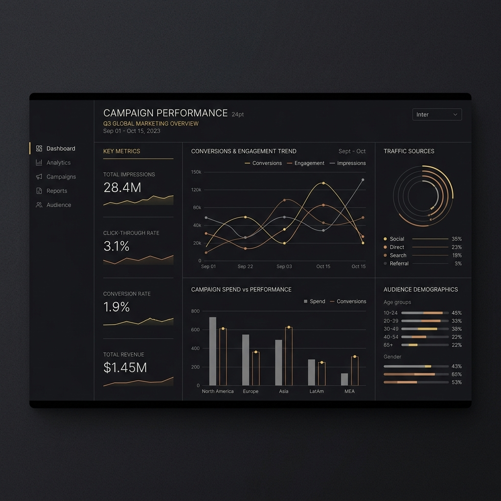

Media buyers trust instinct over algorithms they can't explain. Result: they reject AI recommendations, even when statistically superior. Confidence-first design changed that.
Act I — A Scene
Sarah had been a media buyer for eight years. She could read a media plan like a chess grandmaster reads a board. Patterns, probabilities, hidden levers. The algorithm recommended a placement she'd explicitly avoided for three years—a publisher audience segment that consistently underperformed in her experience. The algorithm showed: 78% confidence. Historical data supported it: campaigns with similar targeting had a 3.2x better ROI than Sarah's usual moves. She stared at the screen for ten minutes. Then she rejected the recommendation. Not because the math looked wrong. Because she didn't believe math could override her instinct. And the software didn't give her a reason to.
Act II — The World
Programmatic advertising in 2018 was shifting from human decision-making to algorithmic decision support. Machines could process performance history across thousands of campaigns. They could spot patterns humans missed. But they did this in silence—opaque mathematical functions that produced recommendations with no explanation. Buyers like Sarah were trained skeptics. They'd spent careers learning to second-guess gut feelings with data. Now they were being asked to trust a black box.
The platform had shipped with raw algorithmic recommendations. Adoption was 15%. Usage was cautious—buyers treated the algorithm as a curiosity, not a tool. When the algorithm succeeded (and it did, frequently), buyers attributed it to luck. When it failed, they lost confidence for months. The team thought the problem was the algorithm's accuracy. It wasn't. The problem was that accuracy without explanation was meaningless to humans who needed to *decide*.
Role: Sole product designer · Full ownership of recommendation interfaces, confidence UI, and interaction patterns · 2018–2020 · Shipped to 12K+ daily active media buyers · NDA
Act III — The Encounter
I spent three weeks shadowing media buyers. I watched them ignore recommendations, override recommendations, and occasionally—very occasionally—trust them. When I asked why they rejected a recommendation the data clearly supported, I heard the same answer repeatedly: "I don't understand why it picked that."
The insight hit in a conversation with a buyer named Marcus. He said: "If the algorithm showed me which campaigns it learned from, if it told me what audience it thought it was targeting, if it explained why it believed this would work—I'd at least know whether I trust its reasoning. Right now it's just a number. And a number isn't a reason."
Users don't trust algorithms. They trust the reasoning behind algorithms. Show the reasoning first. Confidence follows.

Act IV — The Work
I rebuilt the entire recommendation interface around three principles: (1) Show confidence as the primary signal, not an afterthought. (2) Explain the reasoning before showing the result. (3) Make override easy and consequence-free.
Fig 1. Abstracting the "Confidence + Why + Override" architecture.
Confidence Scoring System: Every recommendation now opened with a confidence score—numeric, visual (color-coded gauge), and linguistic ("High confidence, based on 8 similar campaigns").
Key insight: Three modalities for the same signal — numeric, visual, and linguistic — meant a buyer didn't need to be a data scientist to read "87% confidence." They could read the color or the language instead.
Transparent Reasoning (The "Why" Section): Below the confidence score came a structured explanation of the algorithm's logic:
- "This targets the same audience as your top-performing 2023 campaigns" (pattern recognition)
- "At 15% lower cost than similar high-performing placements" (cost efficiency)
- "Based on 127 historical campaigns with similar targeting" (statistical foundation)
Override as a Feature, Not a Failure: The algorithm was correct 78% of the time. But buyers needed autonomy. I made override prominent and easy — a single button, no confirmation dialog for the first override. Each override was logged and fed back into the model. This wasn't a failure state; it was the feedback loop that built trust.
Failure State Design: When confidence was low (below 60%), the recommendation changed from a positive suggestion to a question: "Consider this option? Confidence is moderate (54%), based on only 3 similar campaigns."
Honesty about uncertainty increased trust in confidence claims when they appeared. Paradoxically, admitting weakness was the strongest signal of reliability.
Act V — The Turn
Three months after shipping the redesign, adoption jumped from 15% to 63%. Usage shifted from experimental to primary — buyers stopped using the algorithmic recommendations as a "second opinion" and started using them as a core part of their workflow.
Most tellingly: Sarah, the buyer who had rejected that recommendation on day one, later told her team lead — unprompted — that the algorithm was "actually useful now." Not "sometimes right." Useful.
Act VI — The Implication
Confidence is not a property of the algorithm. It's a property of the user's understanding.
An algorithm can be mathematically correct and still fail if users don't understand or trust its reasoning.
The design moves that worked — confidence scoring, transparent reasoning, honest uncertainty, easy override — aren't specific to programmatic advertising. They apply to any intelligent system where humans need to decide whether to act on algorithmic output:
- Medical diagnosis systems
- Financial risk assessment
- Content recommendation
- Supply chain optimization